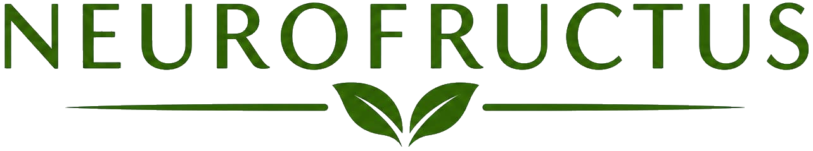
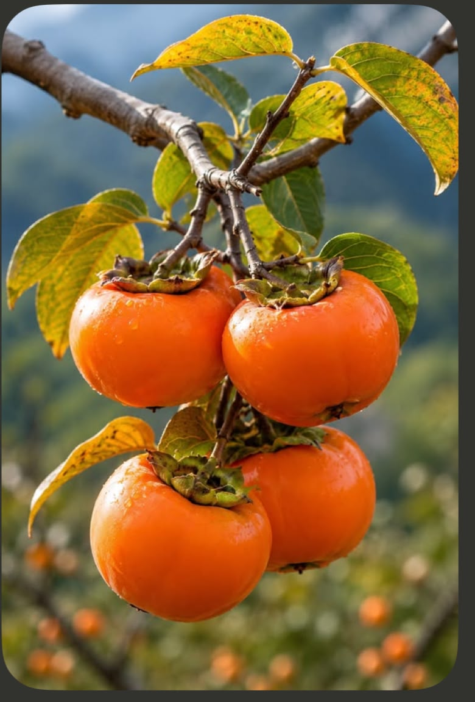
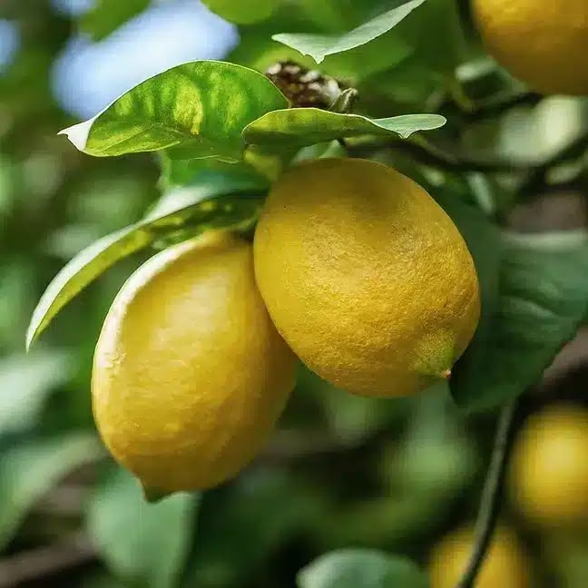
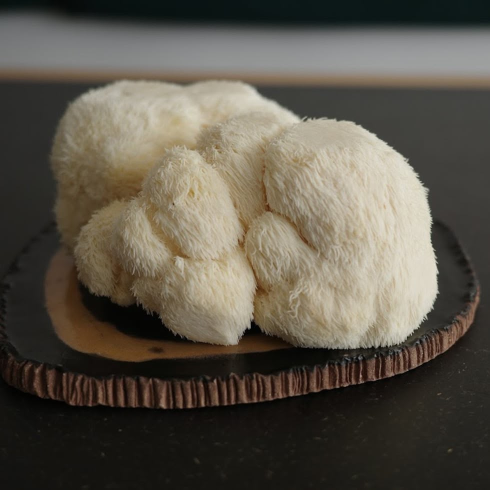
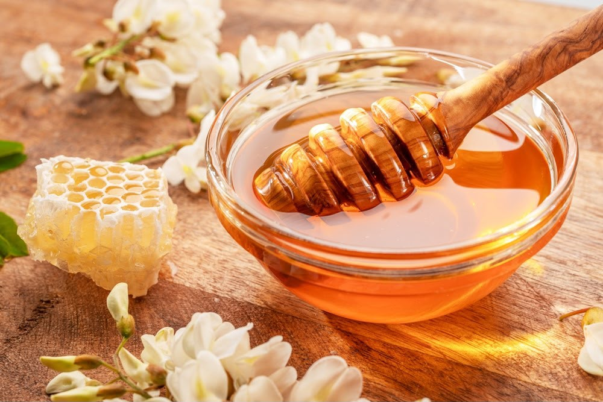
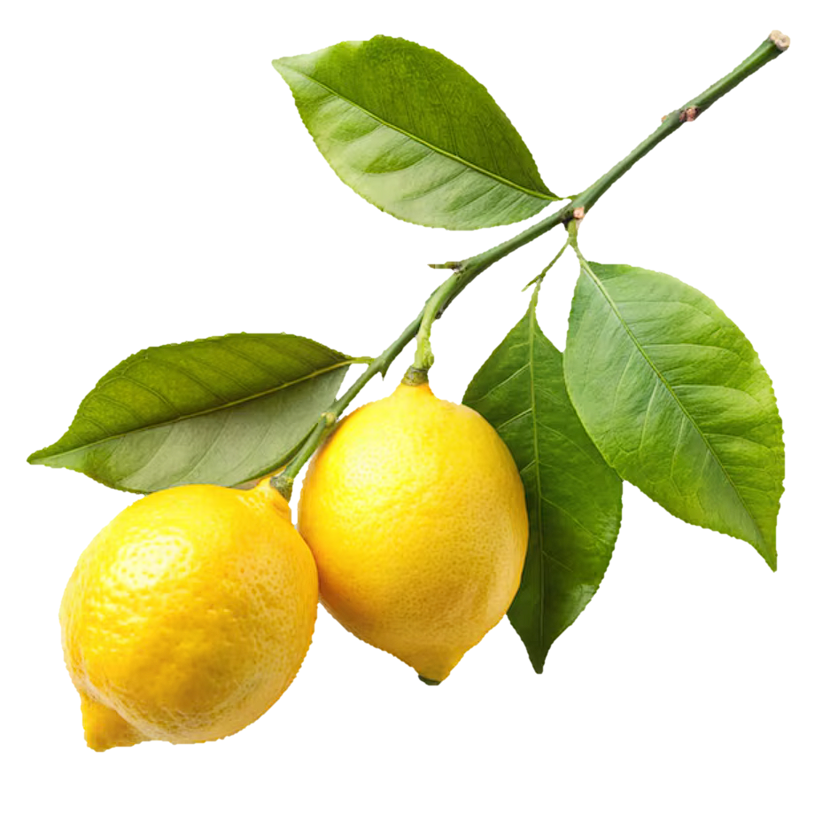
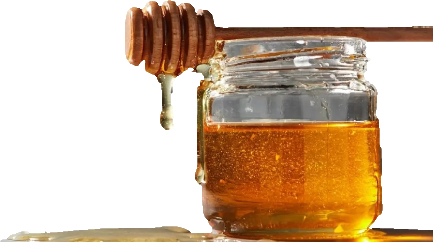

Fruta primero
El kaki aporta dulzor natural, fibra y un color cálido que invita a probar.

FRUTA · NATURALEZA · FOCO
Una bebida frutal que combina kaki, miel, limón y melena de león. Una pausa rica para esos días que piden un poco más de claridad.





En medio de tantas pantallas, pendientes y apuros, Neurofructus propone algo simple: parar un momento y disfrutar de una bebida con sabor frutal e ingredientes reconocibles.
↓El kaki aporta dulzor natural, fibra y un color cálido que invita a probar.
El limón suma frescura y vitamina C a una mezcla de sabor equilibrado.
La melena de león aporta carácter a esta combinación, junto con la dulzura suave de la miel.
Una receta que reúne sabores familiares con un ingrediente poco común. Cada uno tiene su lugar en la mezcla.
El ritmo acelerado y la sobrecarga de pantallas pueden dejar la mente agotada. Neurofructus nace como una alternativa frutal para acompañar tu día y hacer una pausa con intención.
